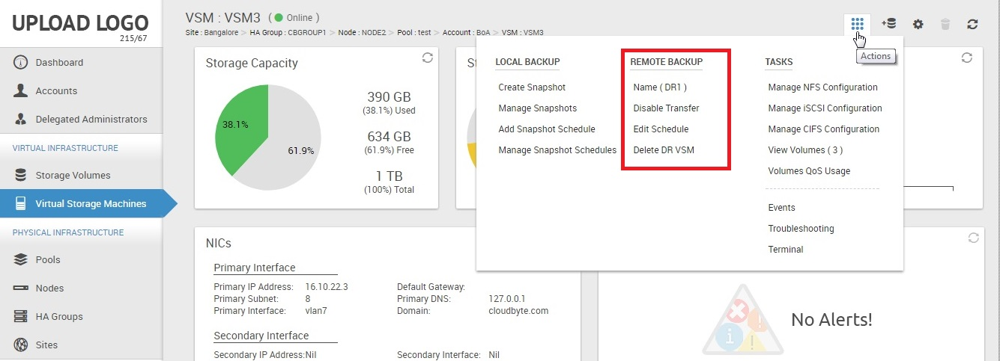

Configuring remote disaster recovery
The disaster recovery mechanism in CloudByte ElastiStor helps you effectively retrieve data in disaster situations. Currently, ElastiStor supports disaster recovery for a single Site. You can rebuild a primary Site using the disaster recovery copy. ElastiStor provides disaster recovery across Sites over WANs.
Setting up remote disaster recovery
- In the ElastiCenter navigation pane, click Virtual Storage Machines.
- From the list of VSMs, select the one for which remote disaster recovery has to be configured.
- In the actions Icon, click Create DR VSM in Remote Backup.
Note: You have this option only if you have not created a DR VSM. If a DR VSM is created, you can modify the settings.
- In the Add DR VSM page,
- Select the Site on which you want to configure the DR VSM.
- Specify a name for the DR VSM.
- Click Next.
- In the following page, select a Pool and then click Next.
- Select the Backup interface, IP Address, and specify a schedule for the DR VSM (in the format minutes/hours/days/month/year).
- Click Add.
A message appears to confirm that the DR VSM has been added.
Managing remote disaster recovery
For a specific VSM, use the Remote Backup section in the actions pane to configure remote disaster recovery.
- In the ElastiCenter navigation pane, click Virtual Storage Machines.
- From the list, select the VSM to manage remote disaster recovery.
- In the actions icon, use the options in the section Remote Backup.

Disaster recovery options
- Name: Provides details of DR VSM and displays the transfer details.
- Disable Transfer: Select and confirm to disable disaster recovery.
- Edit Schedule: Edit the disaster recovery schedule.
- Delete DR VSM: Remove a disaster recovery setup that you have configured.
Recovering data
Note: The DR VSM can be activated only after the base snapshot is successfully transferred from the primary VSM. You can check the status of data transfer by clicking View Transfer Status (Actions icon > Tasks).
- In the ElastiCenter navigation pane, click Virtual Storage Machines.
- From the list of VSMs, select the DR VSM that is associated with the Primary VSM where the disaster occurred.
- In the DR VSM page, go to actions icon and then click Tasks > Activate.
- In the following page, specify the network settings of the DR VSM and then click OK.
- At confirmation prompt, click Yes.
After you activate the DR VSM, the re-mount prompt appears. Ensure that you re-mount the Storage Volumes before you proceed. For details, see
Upgrading a High Availability DR setup
Follow the procedures to seamlessly upgrade a High Availability disaster recovery environment. Node 1 and Node 2 imply the nodes on primary cluster. Similarly, DR Node 1 and DR Node 2 imply the nodes on the secondary cluster:
-
Upgrade ElastiCenter. For details, see
-
Move the Node 1 to maintenance mode. For details, see
-
Upgrade Node 1. For details, see
-
Bring the Node 1 to Available mode. For details, see
- Move the Node 2 to Maintenance mode.
- Upgrade Node 2.
- Bring the Node 2 to Available mode.
- Move the DR Node 1 to Maintenance mode.
- Upgrade DR Node 1.
- Bring the DR Node 1 to Available mode.
- Move the DR Node 2 to Maintenance mode.
- Upgrade DR Node 2.
- Bring the DR Node 2 to Available mode.
Confirm if the DR Transfer occurs after the upgrade as scheduled. In the case of any exceptions, contact CloudByte Technical Support.